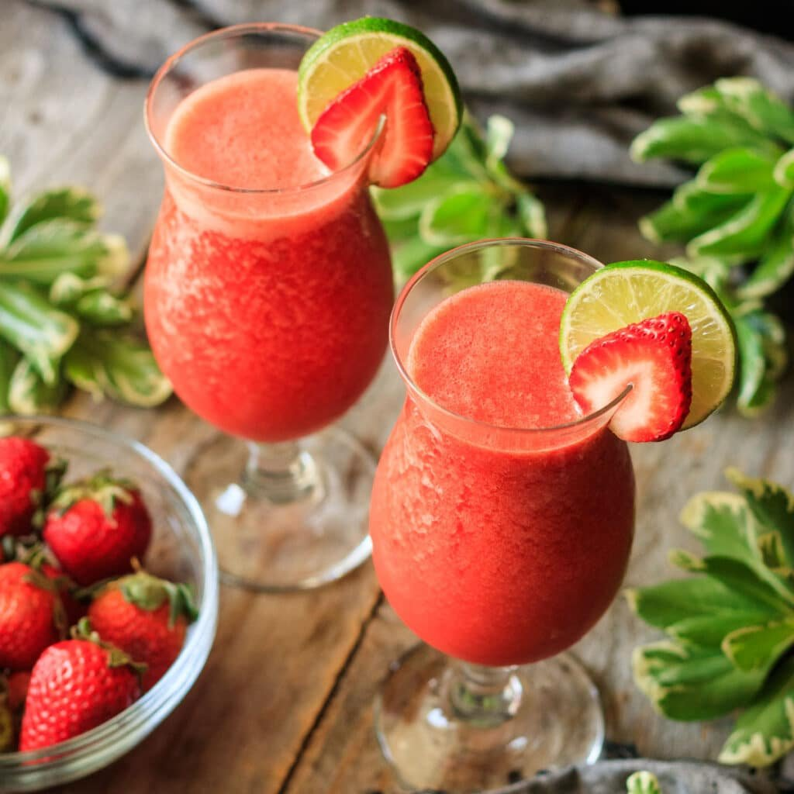

Virgin Strawberry Daiquiri

Ingredients
- 2 large strawberries, hulled
- ¼ cup white sugar
- ¾ cup chilled lemon-lime soda
- 1 tablespoon lemon juice
- 4 cubes ice
Steps:
- Gather the ingredients.
- Combine strawberries, sugar, lemon-lime soda, and lemon juice in the container of a blender. Add ice and blend until smooth.
- Pour into a fancy glass to serve.